Hydrology Textbook – figures with code
Click a figure to see it and the code that makes it in Python, R and MATLAB. Each figure folder also contains the data (when the authors supplied it).
Chapter 1 · Water on Earth
 Budyko curve: evaporative index vs dryness index
Budyko curve: evaporative index vs dryness index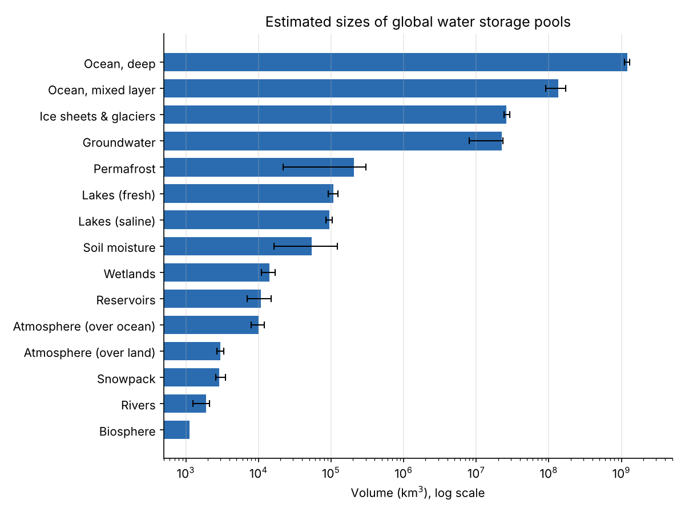
Figure 1.x: Where Earth's water is stored (storage pools)Chapter 2 · Watersheds and the Water Budget
 Types of stream hydrographs and driving processes (Figure 2.3)
Types of stream hydrographs and driving processes (Figure 2.3) Monthly P, ET, Q and change in storage in four climates (Figure 2.7)
Monthly P, ET, Q and change in storage in four climates (Figure 2.7)Chapter 3 · Precipitation
 Figure 3.16: Hourly hyetograph for a 24-hour period
Figure 3.16: Hourly hyetograph for a 24-hour period Figure 3.9: Hyetographs for a frontal storm (March) and a convective storm (June)
Figure 3.9: Hyetographs for a frontal storm (March) and a convective storm (June)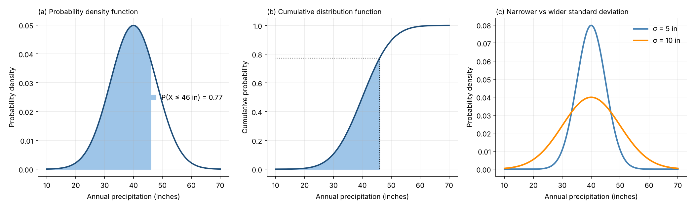
Figures 3.21 and 3.22: normal PDF and CDF of annual precipitation; effect of standard deviation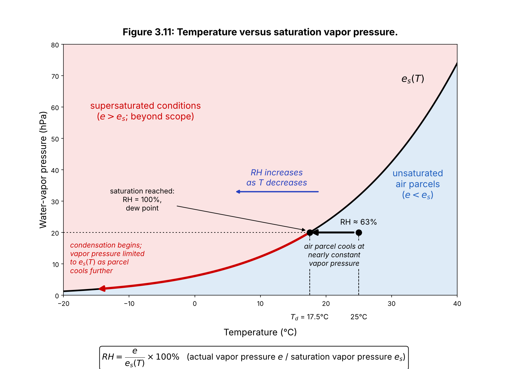
Figure 3.11: Temperature versus saturation vapor pressureChapter 4 · Streamflow, Runoff Generation, and Overland Flow
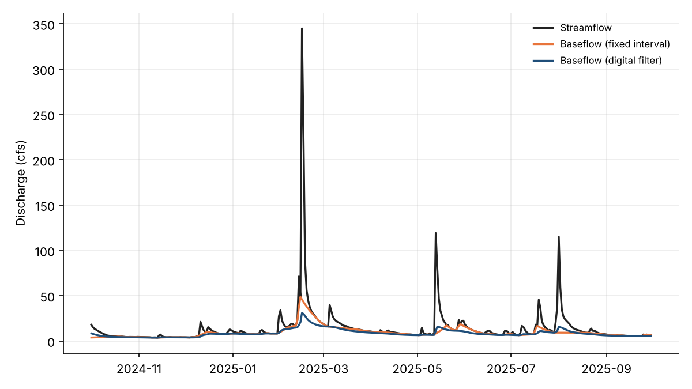
Baseflow separation: fixed-interval vs digital filter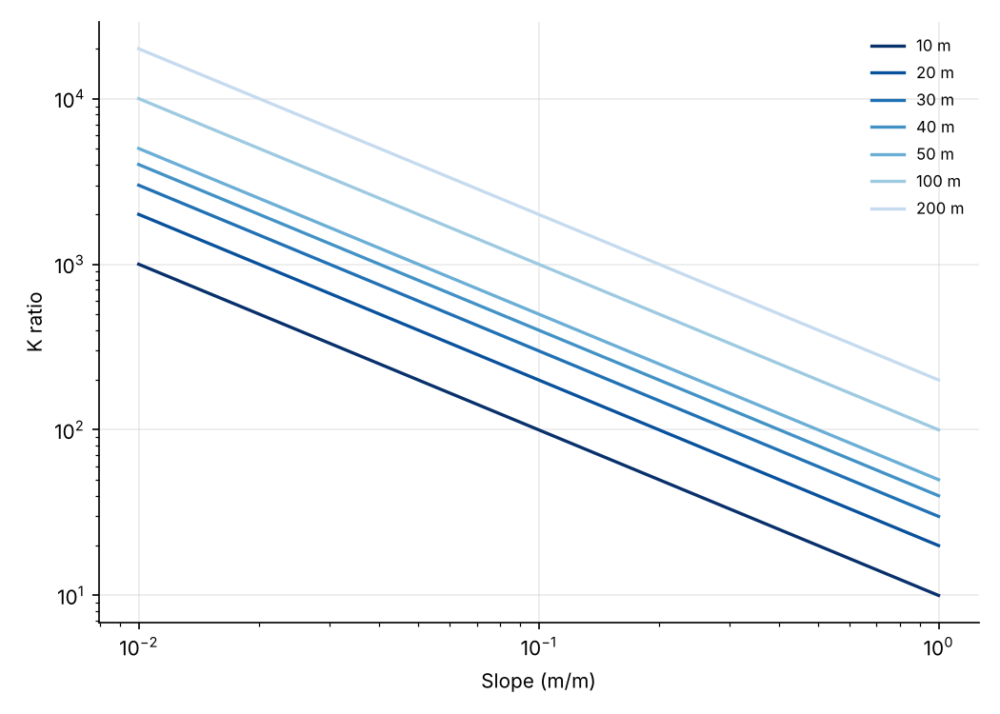
Conductivity ratio vs slope for different hillslope length-to-depth ratios Velocity–area (mid-section) discharge measurement
Velocity–area (mid-section) discharge measurement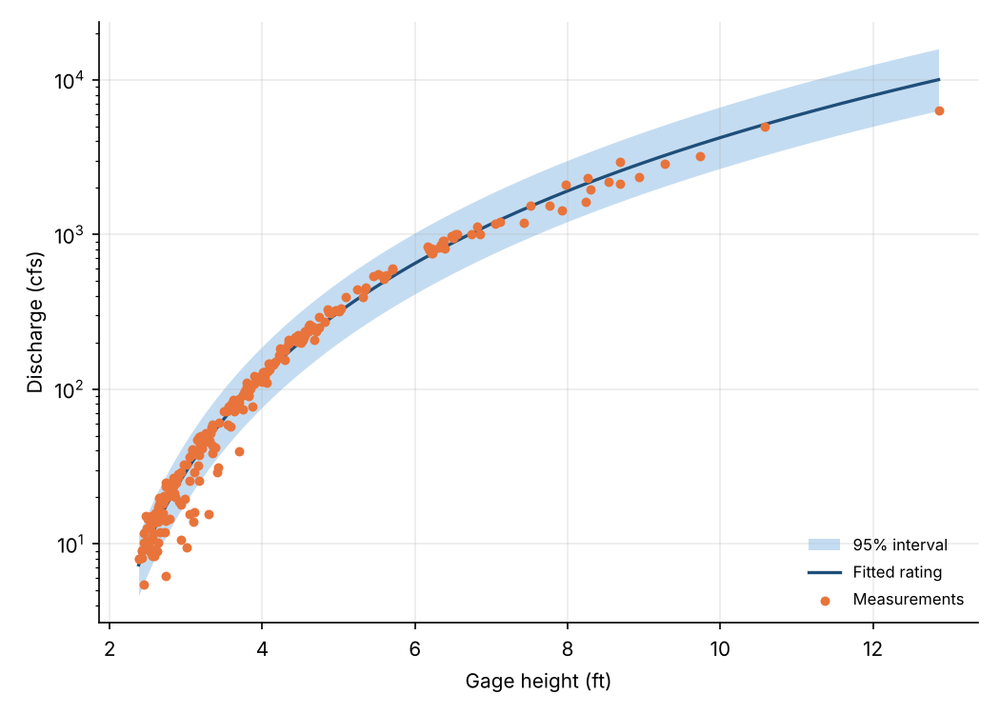
Stage–discharge rating curve with 95% interval Hydrograph by runoff pathway (stacked)
Hydrograph by runoff pathway (stacked)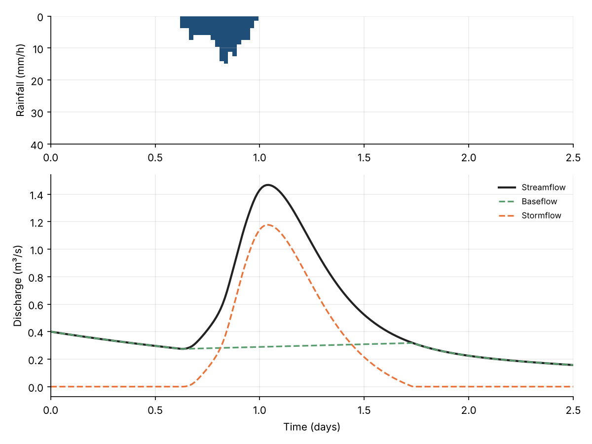
Storm hydrograph with rainfall, baseflow and stormflow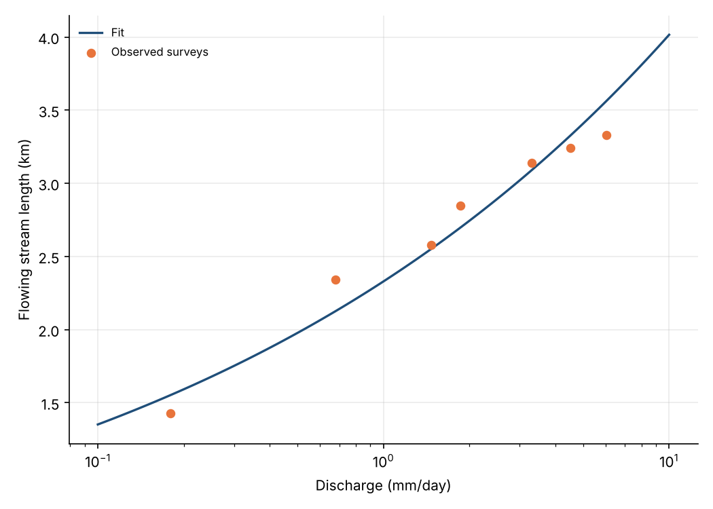
Stream length vs discharge (expansion and contraction of the network)Chapter 5 · Energy Cycle and Evapotranspiration
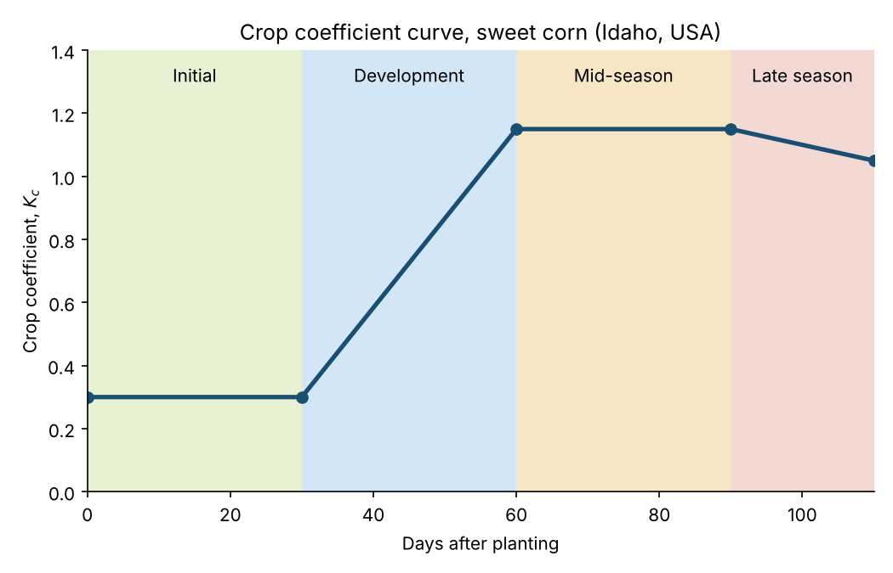
Crop coefficient curve, sweet corn (Idaho, USA) Latent heat flux (LE) from an eddy-covariance flux tower, one week in summer
Latent heat flux (LE) from an eddy-covariance flux tower, one week in summerChapter 6 · Snow and Snowmelt
 SNOTEL snow water equivalent, snow depth and USGS streamflow, WY2011–WY2012
SNOTEL snow water equivalent, snow depth and USGS streamflow, WY2011–WY2012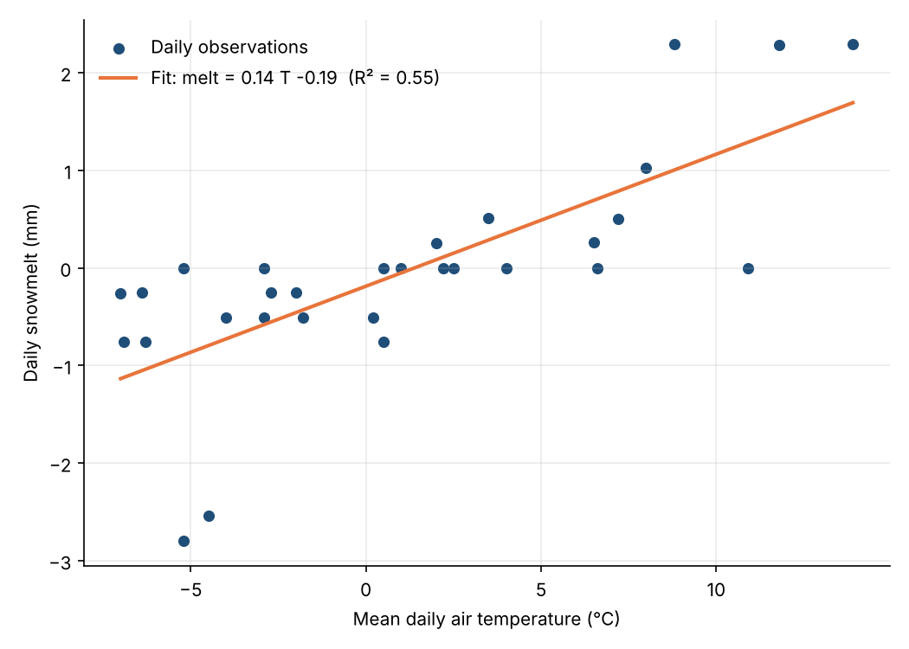
Daily snowmelt vs air temperature, Bogus Basin, April 2023 (degree-day regression)Chapter 7 · Soil Moisture and Infiltration
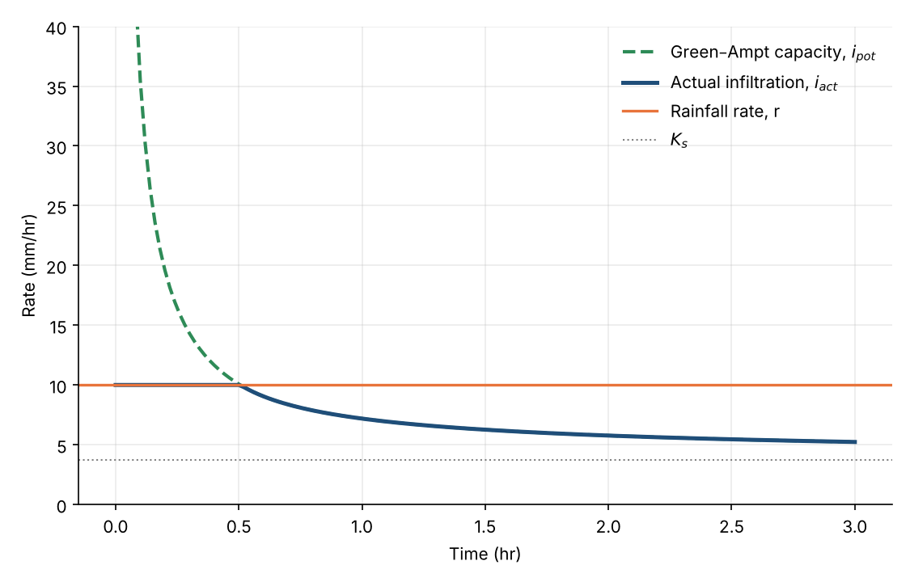
Green–Ampt infiltration under constant rainfall (silty clay) Green–Ampt vs Horton infiltration capacity
Green–Ampt vs Horton infiltration capacity Soil water retention curves: Brooks–Corey, Campbell and van Genuchten (sandy loam and silty clay)
Soil water retention curves: Brooks–Corey, Campbell and van Genuchten (sandy loam and silty clay) USDA soil texture triangle
USDA soil texture triangle